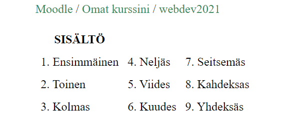

YouTubessa viisaat vepteveloperit sannoi, että yksi tapa opiskella sivujen värkkäämistä on ns. reverse-enginering: toisten sivujen kopiointi ilman lähdekoodin tarkistelua. Tämä kuullosti hyvältä idealta ja niin myös päättyi olemaankin. Oli tosi opettavaa ja mielenkiintoista analysoida ensin sivu paperille, sitten tutkia syntyneiden oivalluksien ja ideoiden pohjalta verkko-oppaita (hei w3schools! :3) ja toteuttaa lopulta koko tavara. Ensimmäinen blini on tietysti ruma, mutten voisi painostaa liikaa, miten paljon tämäkin työ on minulle opettanut.
Halusin keskittyä nimenomaan HTML&CSS komboon, eli kaikki toiminnallisuus jäi pois. Lisäksi ei mitään bootstrappejä tai muitakaan apuvälineitä, jotka eivät olisi puhdasta "corea". Ajattelin myös piirtää kaikki käytetyt kuvatkin itse, mutta nopeasti tajusin, että parempi vaihtoehto on screenshot + rajaus.
Eteenkin HTML-elementtejä pääsin käyttämään. Näistä näkyvin on taulu, jota käytin menu-valikon tekemiseksi. Siitä ei tullut kovinkaan dynaaminen, - ei yhtään, itse asiassa, - mutta se ei nyt ollut varmaankaan tärkeinkään asia. Myöhemmin tajusin, kuinka olisin voinut saman asian, mutta hienommin ja dynaamisemmin CSS:n avlla (jotain-jotain flexbox, jotain-jotain luokat), jota en enää lähtenyt testailemaan, mutta jossakin seuraavassa työssäni varmasti.
